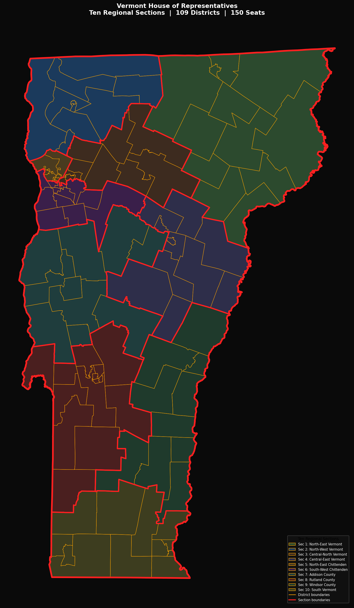
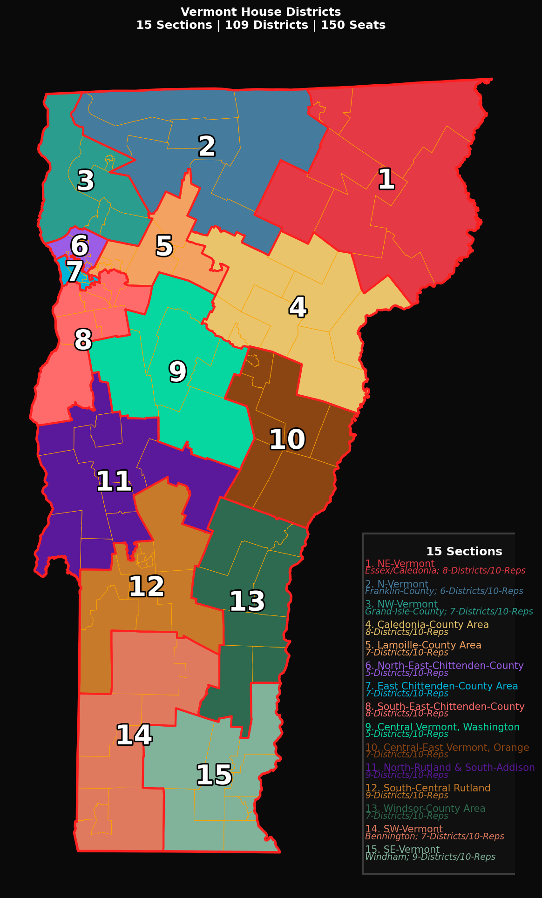
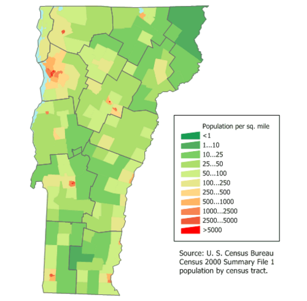
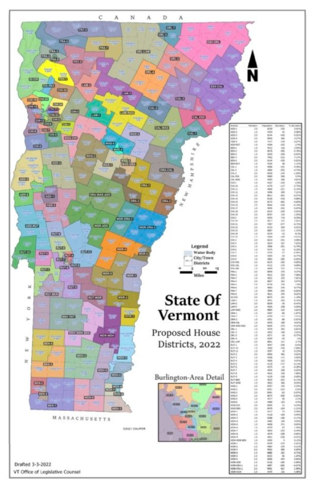
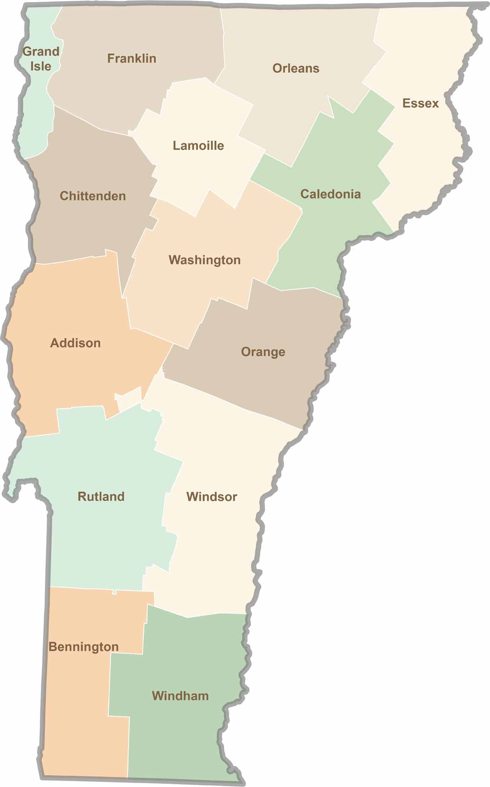

As With-In The People's: "State of Vermont":
Below Are Listed Details About our
Ten Politically-Sub-Divided & Individual
"Common-Law Republic Super-Counties":
Vermont-State "Total Population", Estimate: 648,493.
Vermont-State Civil-Government's "Total Counties": 14.
Vermont Civil-Gov. "Total Representative-Districts": 109/150.
Vermont Civil-Gov. "Total Senator-Districts": 16/30.
Total Civil-Gov US-Fed Representative-Districts: 1.
~~~~~~~~~~~~~~~~~~~~~~~~~~~~~~~~~~~~~~~~~~~~~~~~~~

Here-in immediately Above, we have presented our 'First Re-Edited Version', of:
the publicly-available "Vermont State-Representatives Map", which we have Re-Designed,
to Illustrate the "Top/Down" Manner in which we are presenting our First-Method,
for: "Re-Organizing Vermont's Organic Body-Politic Community", & this in manners which
Form Ten New, & More Locally-Controlled "Political Sub-Divisions"; all of which are
More Compliant With "Traditional Principles of Republicanism, Common-Law, &
Biblical Torah-Law"; (in contrast with that which is presently being provided by Vermont's
"Civil-Government").
In Supplement to this First Method for Illustrating how these Constitutional Common-Law Principles
can be Applied in Vermont's Local Community-Organizing Efforts, we are also presenting, Immediately Below,
our Directly-Related & Explanatory "Top/Down Organizing Database-Information-Display Table";
as follows:
|
10 Common-Law Compliant Super-Counties: |
Civil-Gov: 109/150 Representative Districts: |
|---|---|
|
1: North-East Vermont, State Civil-Government's 15-Representative-Offices, (Each Representing: 4,323 People, for: a Total-Population of: 64,849); & All Re-Assembled As: 12-Representative-Districts. |
Essex-Caledonia District; Essex-Orleans District; Caledonia-Essex District, x 2; Orleans-1 District; Orleans-2 District; Orleans-3 District; Orleans-4 District; Orleans-Lamoille District, x 2; Caledonia-1 District; Caledonia-2 District; Caledonia-3 District, x 2; Caledonia-Washington District. |
|
2: North-West Vermont, State Civil-Government's 15-Representative-Offices, (Each Representing: 4,323 People, for: a Total-Population of: 64,849); & All Re-Assembled As: 10-Representative-Districts. |
Franklin-1 District, x 2; Franklin-2 District; Franklin-3 District; Franklin-4 District, x 2; Franklin-5 District, x 2; Franklin-6 District; Franklin-7 District; Franklin-8 District; Grand Isle-Chittenden District, x 2; Chittenden-Franklin District. |
|
3: Lamoille, E-Chittenden, & NE-Washington, State Civil-Government's 15-Representative-Offices, (Each Representing: 4,323 People, for: a Total-Population of: 64,849); & All Re-Assembled As: 10-Representative-Districts. |
Lamoille-1 District; Lamoille-2 District, x 2; Lamoille-3 District; Lamoille-Washington District, x 2; Chittenden-3 District, x 2; Chittenden-10 District; Chittenden-22 District, x 2; Chittenden-23 District, x 2; Chittenden-24 District; Chittenden-25 District. |
|
4: North-West Chittenden-County, State Civil-Government's 15-Representative-Offices, (Each Representing: 4,323 People, for: a Total-Population of: 64,849); & All Re-Assembled As: 11-Representative-Districts. |
Windsor-Orange-1 District; Orange-1 District; Orange-2 District; Orange-3 District; Orange-Caledonia District; Orange-Washington-Addison District, x 2; Washington-Orange District, x 2; Washington-3 District, x 2; Washington-4 District, x 2; Washington-5 District; Washington-6 District. |
|
5: South Chittenden-County, State Civil-Government's 15-Representative-Offices, (Each Representing: 4,323 People, for: a Total-Population of: 64,849); & All Re-Assembled As: 8-Representative-Districts. |
Chittenden-14 District, x 2; Chittenden-15 District, x 2; Chittenden-16 District, x 2; Chittenden-17 District; Chittenden-18 District, x 2; Chittenden-19 District, x 2; Chittenden-20 District, x 2; Chittenden-21 District, x 2. |
|
6: SE-Washington, & Orange, State Civil-Government's 15-Representative-Offices, (Each Representing: 4,323 People, for: a Total-Population of: 64,849); & All Re-Assembled As: 12-Representative-Districts. |
Chittenden-1 District; Chittende- 2 District, x 2; Chittenden-4 District; Chittenden-5 District; Chittenden-6 District; Chittenden-7 District; Chittenden-8 District; Chittenden-9 District; Chittenden-11 District; Chittenden-12 District; Chittenden-13 District, x 2; Washington-Chittenden District, x 2. |
|
7: Addison, & NW-Rutland, State Civil-Government's 15-Representative-Offices, (Each Representing: 4,323 People, for: a Total-Population of: 64,849); & All Re-Assembled As: 10-Representative-Districts. |
Addison-1 District, x 2; Addison-2 District; Addison-3 District, x 2; Addison-4 District, x 2; Addison-5 District; Addison-Rutland-1 District; Rutland-9 District; Windsor-Addison District; Washington-1 District, x 2; Washington 2 District, x 2. |
|
8: Rutland, & NW-Windsor, State Civil-Government's 15-Representative-Offices, (Each Representing: 4,323 People, for: a Total-Population of: 64,849); & All Re-Assembled As: 13.5-Reps-Districts. |
Rutland-8 District; Rutland-10 District; Rutland-11 District; Rutland-Windsor District; Rutland-1 District; Rutland-2 District, x 2; Rutland-3 District; Rutland-4 District; Rutland-5 District; Rutland-6 District; Rutland-7 District; Rutland-Bennington District; Bennington-Rutland District; Bennington-4 District; Rep-2, (North-Half). |
|
9: North-Windham, & SE-Windsor, State Civil-Government's 15-Representative-Offices, (Each Representing: 4,323 People, for: a Total-Population of: 64,849); & All Re-Assembled As: 10-Representative-Districts. |
Windsor-Orange-2 District, x 2; Windsor-1 District, x 2; Windsor-2 District; Windsor-3 District, x 2; Windsor-4 District; Windsor-5 District; Windsor-6 District, x 2; Windsor-Windham District; Windham-Windsor-Bennington District; Windham-3 District, x 2. |
|
10: South Vermont, State Civil-Government's 15-Representative-Offices, (Each Representing: 4,323 People, for: a Total-Population of: 64,849); & All Re-Assembled As: 12.5-Reps-Districts. |
Bennington-1 District; Bennington-2 District, x 2; Bennington-3 District; Bennington-4 District; Rep-1; (South-Half); Bennington-5 District, x 2; Windham-1 District; Windham-2 District; Windham-4 District; Windham-5 District; Windham-6 District; Windham-7 District; Windham-8 District; Windham-9 District. |
~~~~~~~~~~~~~~~~~~~~~~~~~~~~~~~~~~~~~~~~~~~~~~~~~~
As different from our above top/down map & data-base table; Next down here-in Below,
we present our "Bottom/Up" Re-Edited Version of Vermont's State-Representatives Map, which is
also followed by our presentation of its own Explanatory 'Database-Information-Display Table';
both of which are More Focused on Re-Organizing these Same Vermont Sovereign Local-Community
Jurisdictions, in this "Bottom-Up" & Grass-Roots Local-Community Organizing Manner.
All of this is very Organic & Fluid; & these Jurisdictional Boundary-Lines are Expected to be
Frequently Changing, as the differing Local-Communities involved in each such Jurisdiction,
come to an Agreement/Consensus, about the Best Methodologies for Applying these Traditional
'Organic Body-Politic Self-Governing Principles', in Manners which Promote the
Responsible Self-Governing of the Individual People involved in each such Local Community.
Here-by, & eventually, we expect, that: Both of these "Top-Down" & "Bottom-Up" Methods
for Organizing Vermont's Local Self-Governing Communities, will become "Seamlessly Merged".
Here-under & here-by; Vermont's Local Community Members are being Legitimately &
Constitutionally Empowered, to Form More Locally-Controlled "Political Sub-Divisions".

~~~~~~~~~~~~~~~~~~~~~~~~~~~~~~~~~~~~~~~~~~~~~~~~~~
We are here-in seeking to Empower Vermont's More Socially-Responsible Local Community-Members
to Re-Organize & Re-Build Vermont's Pre-Existing Civil/Statutory State-Government, in manners which
More Efficiently Promote Constitutionally-Legitimate Local Self-Governing; all Through
Their Own Efforts At Reasonable Application of "Traditional Principles of Republicanism,
Common-Law, & Biblical Torah-Law", to the 150-Members & Districts of Vermont's
Civil-Government's "House-of-Representatives".
Modern Constitutional-Terminology Recognizes this process, as a "Political Sub-Dividing"
Process, for De-Centralizing the Full 'Self-Governing Sovereignty of the State of Vermont'.
Vermont's Population, as estimated at 648,493, is the 'Second Smallest-Population' of Any State
in our USA; & the fact that this State's House of Representatives has a quite large number of 150-Members,
means, that: Each Representative Represents a Very Small Local Community of People, slightly over 4,000.
This is an "Advantage" in our efforts here at 'Local Community Organizing'; all as derived from
Traditional Principles of Republicanism, Common-Law, & Biblical Torah-Law.
We have written documents explaining how these Principles may be actually Applied
in our modern political real-world; & we also have a few more Specific Vermont-Organizing Foot-Notes,
both documents of which are available in the below web-links:
Responsibly Self-Governing Body-Politic Communities Organic-Hierarchies Organizing: USA.
Vermont-Organizing Foot-Notes.
~~~~~~~~~~~~~~~~~~~~~~~~~~~~~~~~~~~~~~~~~~~~~~~~~~
"Essential Principles" of "Common-Law Republicanism", Require, that:
All Smaller-Communities, become Organized for "Responsible Self-Governing";
all of which, here-under, Mandate Our Vigilantly Engaging In Regular
"Political-Polling Process", "Administering Justice", "Keeping the Peace";
& "Paying All of Our Legitimate Commercial-Debts".
In Pursuit of This "Public Interest", aka: These "Public Purposes", aka:
These Essential Organic/Constitutional Purposes, our CLR-Leadership has Re-Assigned
the Above Listed Vermont State Representatives-Districts, in-to the Above-Listed
Individually Sovereign Common-Law Republic "Super-County Districts".


